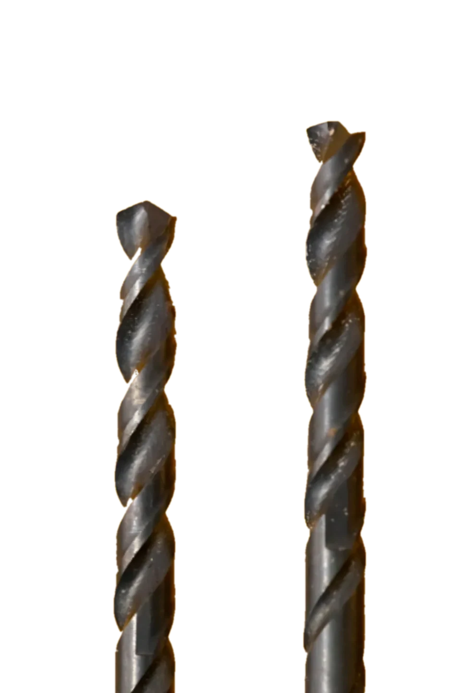

The flutes
spiral galleries · they carry the chips out
The margin
the narrow land that rides the hole wall
We make the tools that make the parts.
Twist drills · HSS
POINT [118°] · GROUND HERE
Every tool walks the same six steps.
[1]DRAW
[2]TURN
[3]MILL
[4]GRIND
[5]MEASURE
[6]SHARPEN

THE SHOP · TURNINGKINGSTON, NY

THE OLD LATHESTILL IN SERVICE
Everything here gets drawn, machined, and inspected by the two of us, usually with an argument in the middle about whether it needs another thou taken off. The six steps on the ruler above are the whole religion. The old lathe is slower than the CNC and we keep it anyway, because some jobs want a handwheel and a bit of listening.
The tools.
Grit where it cuts, nowhere else.

We time everything · this station reached you
D[0] H[00] M[00] S[00]
Coating
Electroplated diamond grit, bonded to the working end only
Shank
Ground steel, sized for common collets · sold as a set of [3]

Heads that outlive their spindles.
Indexable inserts, so a worn edge is a part, not a replacement
The seats
Milled here, one fixture per body · inserts torque to [2]Nm
Sharpened by hand.

HSS TWIST DRILLS · PAIRSPOINT UP
THE SHOP · WHERE EDGES ARE MADEBY EYE
Edge
Ground high-speed steel, finished on the wheel by eye
Point anywhere in the drill photo
it reads back its own color
the site's yellow is sampled from this photo
Fifty or more, ground to your drawing.
Terms
Minimum [50] pieces · your print or ours · quoted in [1] day